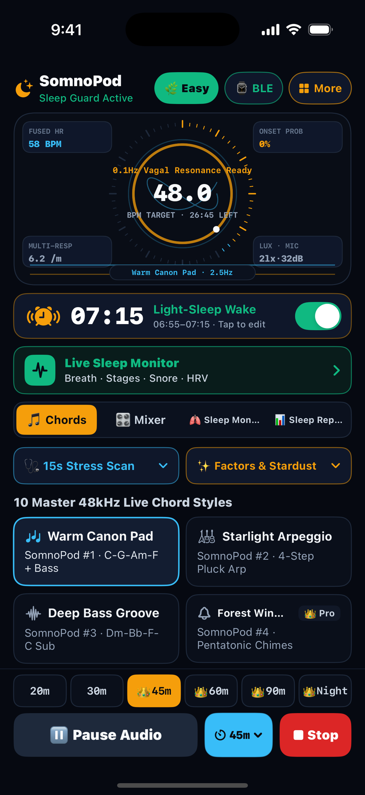
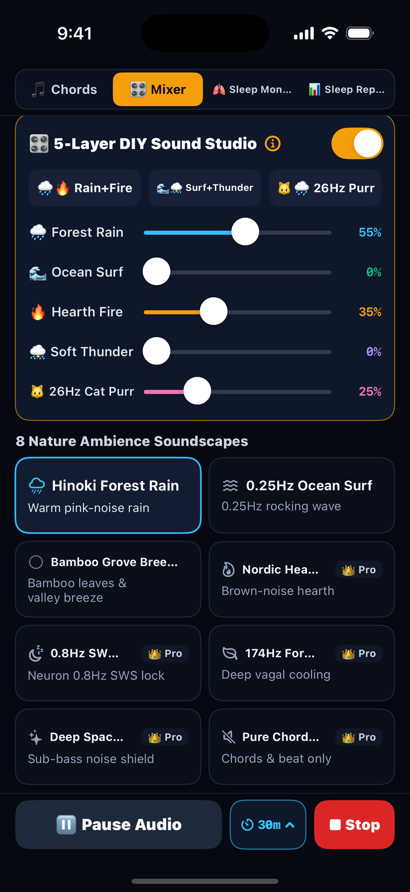
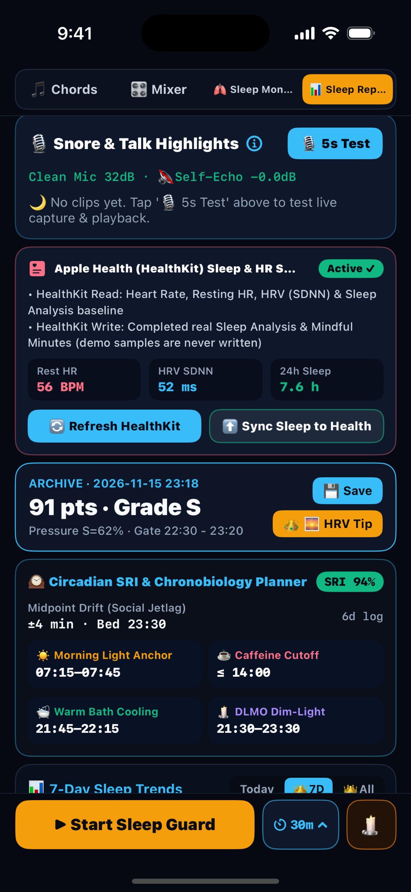
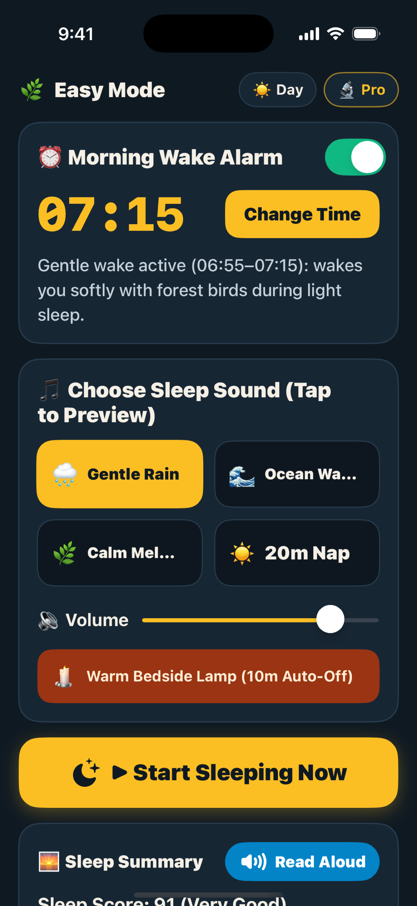

无需穿戴手表、无需注册登录：把 iPhone 或 iPad 放在枕边，自动完成整夜深浅睡眠分期、呼吸节律、鼾声/梦话本地捕捉与 Apple Watch / 蓝牙心率 HRV 监测，同时流淌出 48kHz 实时合成的 432Hz 温暖纯律和弦与森林夜雨，并在清晨浅睡窗口温柔唤醒。
Official Contact / 官方技术支持邮箱: t58@163.com
免穿戴枕边监测入睡潜伏期、深睡与浅睡比例、翻身体动与呼吸频率；本地私密记录打鼾与梦话高光片段，清晨即看完整睡眠质量评分。
告别单调 MP3 循环：内置 10 款纯律大师和弦、8 款自然白噪音（深林夜雨、深海潮汐、壁炉暖火、粉红/布朗噪音）、4-7-8 减压呼吸与 20 分钟科学能量小睡。
无缝同步 Apple HealthKit 并原生支持标准 BLE 0x180D 实时心率广播手表与心率带，追踪整夜最低心率与晨间迷走神经 HRV 恢复力。
在设定的起床窗口内识别浅睡时机，以森林晨鸟与破晓风铃渐强唤醒；内置 Siri 快捷指令及 46 号超大字关怀模式与 15 语种语音简报。




SomnoPod (眠舱) is intended solely for general sleep relaxation, white-noise soundscapes, breathing exercises, and personal wellness self-tracking. It is not a medical device and does not provide medical diagnosis or treatment.
非医疗器械声明：眠舱仅用于日常助眠放松、白噪音环境声与个人睡眠健康自我记录，不属于医疗器械，不提供任何医学诊断或治疗建议。